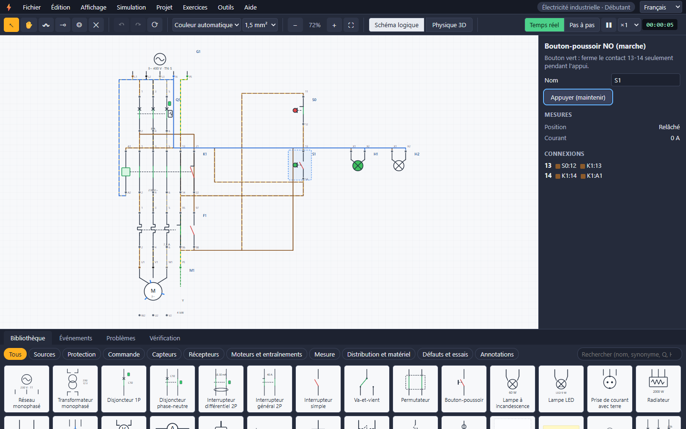
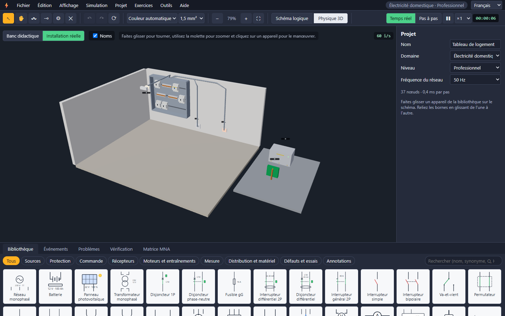
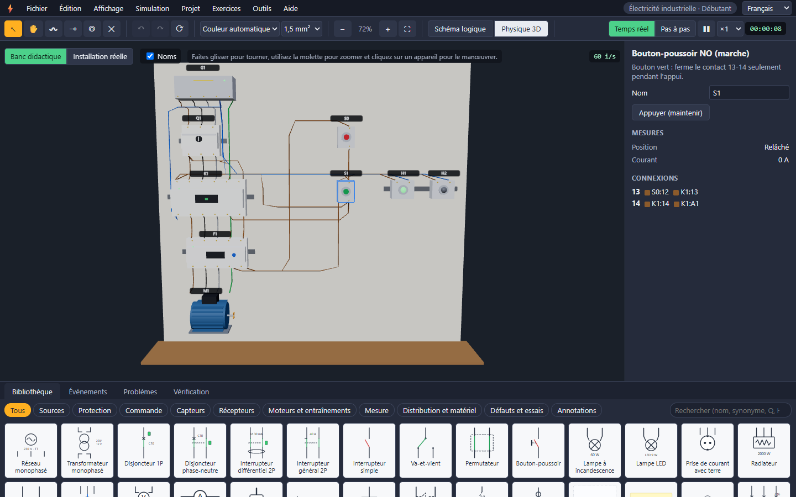

Appareils réels
Disjoncteurs, différentiels, contacteurs, relais thermiques, moteurs, variateurs, automates, panneaux solaires et appareils de mesure, avec les symboles de la CEI 60617.
Simulateur pédagogique d'installations électriques
Faísca Tracer simule des installations domestiques et industrielles avec des appareils réels. Câblez, manœuvrez interrupteurs et protections, mesurez tensions et courants et voyez le résultat sur un schéma 2D et dans une vue physique 3D.
0 téléchargements

Présentation
Comme sur un banc d'essai, on monte le circuit avec des appareils réels et on met sous tension. La différence : rien ne s'abîme, et chaque défaut est accompagné d'une explication.
Disjoncteurs, différentiels, contacteurs, relais thermiques, moteurs, variateurs, automates, panneaux solaires et appareils de mesure, avec les symboles de la CEI 60617.
Tensions, courants, puissances et chutes de tension sont issus des formules de l'électrotechnique. Chaque valeur peut être vérifiée à la main.
Quand un appareil déclenche ou que rien ne fonctionne, un message court indique ce qui s'est passé, où, pourquoi et quoi faire.
Le même projet sur un banc didactique ou dans une installation réelle. Cliquez sur un appareil pour le manœuvrer et voyez la lampe s'allumer ou le moteur tourner.
Un énoncé, des objectifs vérifiés automatiquement et une note. Les formateurs créent leurs propres exercices sans programmer.
Règles indicatives de la CEI 60364 : Ib ≤ In ≤ Iz, chutes de tension, différentiel 30 mA sur les prises, masses reliées à la terre.
Deux domaines

Logements et commerces : point lumineux, va-et-vient, prises avec terre, tableau avec différentiel, protection des personnes en TT, dimensionnement des câbles et système solaire avec batterie.

Moteurs et commande : démarrage direct avec auto-maintien, inversion du sens de marche, étoile-triangle, variateur de fréquence, compensation du facteur de puissance et automate programmé en ladder.
Pour qui
Le même simulateur sert les deux profils. Au niveau Débutant, l'interface montre l'essentiel ; au niveau Professionnel, elle montre tout.
Des filières techniques et d'ingénierie. Une visite guidée apprend à monter le premier circuit en le faisant, pas à pas, et les erreurs deviennent des explications.
Dans les centres de formation, lycées techniques et universités. Exemples prêts à l'emploi, exercices corrigés automatiquement, fichiers protégés contre la modification et rapports à imprimer.
Électriciens, techniciens de maintenance et ingénieurs qui veulent tester un schéma de commande ou de puissance avant de le câbler.
Comment l'utiliser
Les projets s'enregistrent dans des fichiers .fast. Un projet commencé dans le navigateur s'ouvre dans l'application, et inversement.
S'installe sur l'ordinateur et fonctionne sans internet. Ouvre et enregistre les projets directement dans vos dossiers. Idéale pour les salles de formation sans réseau et pour un usage quotidien.
.fast s'ouvrent d'un double-clic0 téléchargements
Version 1.1.0 · programme d'installation de 210 Mo · autres versions et notes
Rien à installer. S'ouvre dans un nouvel onglet, sur n'importe quel ordinateur. Idéal pour essayer, pour les cours sur des ordinateurs partagés et pour montrer un circuit à quelqu'un.
.fastS'ouvre dans un nouvel onglet
Votre avis
Il vous plaît ? Vous avez trouvé une erreur ? Il manque un appareil, un exemple ou un exercice ? Dites-le-nous. Chaque message est lu.
Faísca Tracer est un outil pédagogique. Il ne remplace pas la conception d'une installation selon la réglementation.